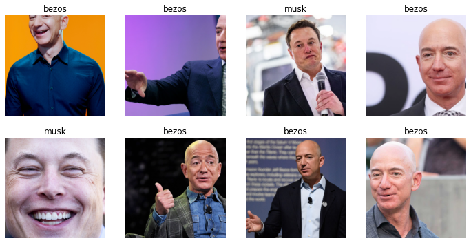
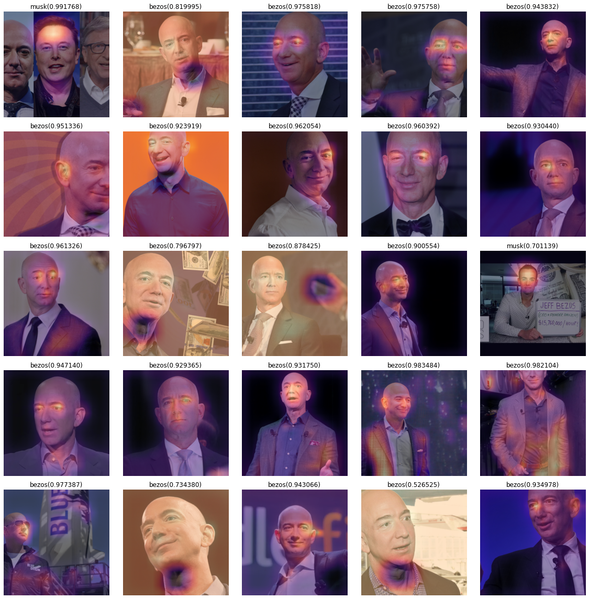
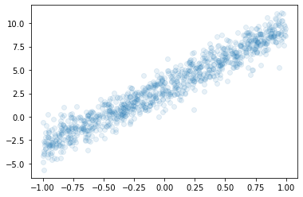
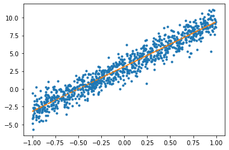
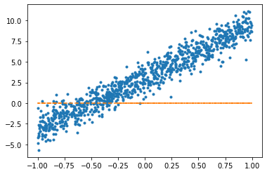
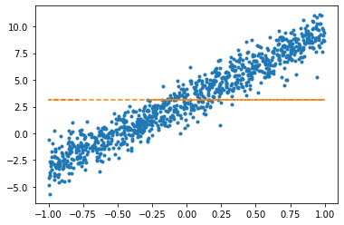
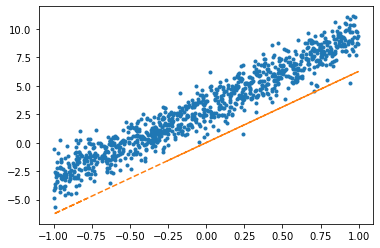
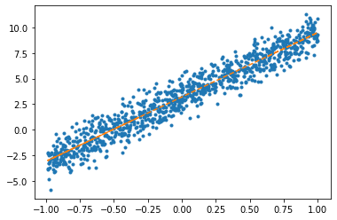
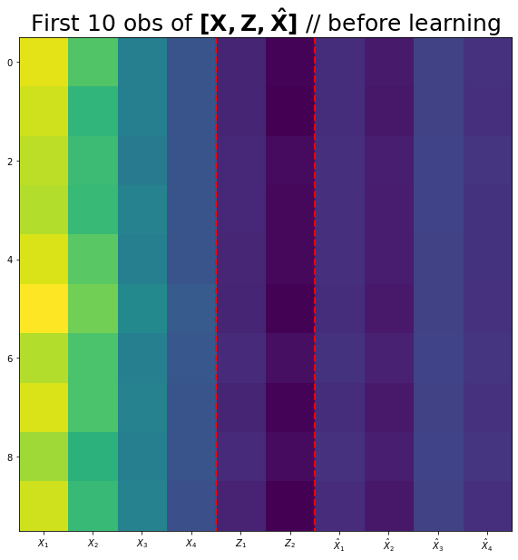
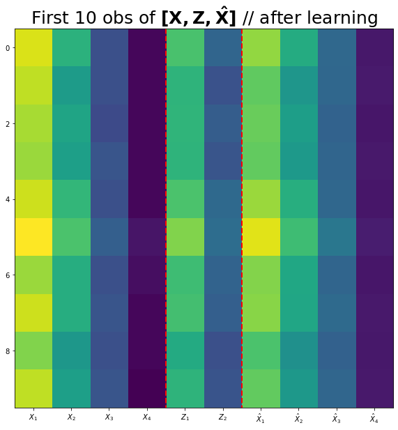

import torch
import pandas as pd
import matplotlib.pyplot as plt
from fastai.vision.all import *중간고사 대체과제
1. 크롤링을 통한 이미지 분석 및 CAM
(1) 두 가지 키워드로 크롤링을 수행하여 이미지자료를 모아라. (키워드는 각자 마음에 드는 것으로 설정할 것)
힌트1: hynn, iu 라는 키워드로 크롤링하여 이미지자료를 모으는 코드
#
# 크롤링에 필요한 준비작업들
#!pip install -Uqq duckduckgo_search
from duckduckgo_search import ddg_images
from fastdownload import download_url
from fastcore.all import *
def search_images(term, max_images=200): return L(ddg_images(term, max_results=max_images)).itemgot('image')#
# 폴더만드는코드 -- 사실 손으로 만들어도 무방함..
!mkdir images
!mkdir images/train
!mkdir images/test
!mkdir images/train/iu
!mkdir images/train/hynn
!mkdir images/test/iu
!mkdir images/test/hynndownload_images(dest='./images/train/iu',urls=search_images('iu',max_images=200)) # iu 라는 키워드로 200개 이미지 크롤링 -> ./images/train/iu 에 저장
time.sleep(10) # 서버과부하를 위한 휴식코드
download_images(dest='./images/train/hynn',urls=search_images('hynn',max_images=200)) # hynn 이라는 키워드로 200개 이미지 크롤링 -> ./images/train/hynn 에 저장
time.sleep(10) # 서버과부하를 위한 휴식코드
download_images(dest='./images/train/iu',urls=search_images('iu kpop',max_images=200)) # iu kpop 이라는 키워드로 200개 이미지 크롤링 -> ./images/train/iu 에 저장
time.sleep(10) # 서버과부하를 위한 휴식코드
download_images(dest='./images/train/hynn',urls=search_images('hynn kpop',max_images=200)) # hynn kpop 이라는 키워드로 200개 이미지 크롤링 -> ./images/train/hynn 에 저장
time.sleep(10) # 서버과부하를 위한 휴식코드 download_images(dest='./images/test/iu',urls=search_images('iu photo',max_images=50)) # iu photo 라는 키워드로 50개 이미지 크롤링 -> ./images/test/iu 에 저장
time.sleep(10) # 서버과부하를 위한 휴식코드
download_images(dest='./images/test/hynn',urls=search_images('hynn photo',max_images=50)) # hynn photo 라는 키워드로 50개 이미지 크롤링 -> ./images/test/hynn 에 저장
time.sleep(10) # 서버과부하를 위한 휴식코드 힌트2: 불량이미지 삭제
bad_images = verify_images(get_image_files('./images'))
bad_images- 불량이미지 목록
bad_images.map(Path.unlink)- 불량이미지는 dls를 불러올때 방해되므로 제거
!mkdir images/train/bezos
!mkdir images/train/musk
!mkdir images/test/bezos
!mkdir images/test/muskdownload_images(dest='./images/train/bezos',urls=search_images('jeff bezos',max_images=200))
time.sleep(10)
download_images(dest='./images/train/musk',urls=search_images('elon musk',max_images=200))
time.sleep(10)
download_images(dest='./images/train/bezos',urls=search_images('jeff bezos rich',max_images=200))
time.sleep(10)
download_images(dest='./images/test/musk',urls=search_images('elon musk rich',max_images=200))
time.sleep(10)
download_images(dest='./images/test/bezos',urls=search_images('jeff bezos photo',max_images=50)) # iu photo 라는 키워드로 50개 이미지 크롤링 -> ./images/test/iu 에 저장
time.sleep(10) # 서버과부하를 위한 휴식코드
download_images(dest='./images/test/musk',urls=search_images('elon usk photo',max_images=50)) # hynn photo 라는 키워드로 50개 이미지 크롤링 -> ./images/test/hynn 에 저장
time.sleep(10) # 서버과부하를 위한 휴식코드 bad_images = verify_images(get_image_files('./images'))
bad_images(#25) [Path('images/train/bezos/1d39746b-ad4d-49ac-ac25-0f569a94e3f2.jpg'),Path('images/train/bezos/ee365bea-bb15-4b79-9ebc-350d5a823ca8.JPG'),Path('images/train/bezos/289cbafa-0fbc-4be9-a39f-68429c876095.jpg'),Path('images/train/bezos/21495a5a-9602-42f5-8f7b-4978856bd1e8.jpg'),Path('images/train/bezos/3bd6c738-5361-4f95-9b3b-643904f5a135.jpg'),Path('images/train/bezos/2ca0722d-cb88-4f18-bc5f-c410bd16243f.jpg'),Path('images/train/bezos/e9924f91-aac6-4a11-a235-dacb7f80d576.jpg'),Path('images/train/bezos/fcc25b56-8807-4e52-bc37-6e1718994d8a.jpg'),Path('images/train/bezos/07e554ae-1261-4c81-b908-7c8d94e94702.jpg'),Path('images/train/bezos/ea6592bc-eff0-4db6-b93c-3b6e85897877.jpg')...]bad_images.map(Path.unlink)(#25) [None,None,None,None,None,None,None,None,None,None...](2) ImageDataLoaders.from_folder 를 이용하여 dls를 만들어라.
힌트1: dls를 만드는 코드
dls = ImageDataLoaders.from_folder(path = './images', train='train',valid='test',item_tfms=Resize(512),bs=8) dls.show_batch()dls = ImageDataLoaders.from_folder(path = './images', train='train',valid='test',item_tfms=Resize(512),bs=8) dls.show_batch()
(3) resnet34를 이용하여 학습하라.
lrnr = vision_learner(dls,resnet34,metrics=accuracy) lrnr.fine_tune(5)| epoch | train_loss | valid_loss | accuracy | time |
|---|---|---|---|---|
| 0 | 0.623527 | 0.999150 | 0.695341 | 00:07 |
/home/csy/anaconda3/envs/py37/lib/python3.7/site-packages/PIL/Image.py:960: UserWarning: Palette images with Transparency expressed in bytes should be converted to RGBA images
"Palette images with Transparency expressed in bytes should be "
/home/csy/anaconda3/envs/py37/lib/python3.7/site-packages/PIL/Image.py:960: UserWarning: Palette images with Transparency expressed in bytes should be converted to RGBA images
"Palette images with Transparency expressed in bytes should be "
/home/csy/anaconda3/envs/py37/lib/python3.7/site-packages/PIL/Image.py:960: UserWarning: Palette images with Transparency expressed in bytes should be converted to RGBA images
"Palette images with Transparency expressed in bytes should be "
/home/csy/anaconda3/envs/py37/lib/python3.7/site-packages/PIL/Image.py:960: UserWarning: Palette images with Transparency expressed in bytes should be converted to RGBA images
"Palette images with Transparency expressed in bytes should be "
/home/csy/anaconda3/envs/py37/lib/python3.7/site-packages/PIL/Image.py:960: UserWarning: Palette images with Transparency expressed in bytes should be converted to RGBA images
"Palette images with Transparency expressed in bytes should be "
/home/csy/anaconda3/envs/py37/lib/python3.7/site-packages/PIL/Image.py:960: UserWarning: Palette images with Transparency expressed in bytes should be converted to RGBA images
"Palette images with Transparency expressed in bytes should be "| epoch | train_loss | valid_loss | accuracy | time |
|---|---|---|---|---|
| 0 | 0.350595 | 1.298542 | 0.695341 | 00:09 |
| 1 | 0.228978 | 1.561831 | 0.759857 | 00:08 |
| 2 | 0.185354 | 1.211755 | 0.806452 | 00:08 |
| 3 | 0.210802 | 1.586954 | 0.731183 | 00:08 |
| 4 | 0.210048 | 0.952422 | 0.820789 | 00:08 |
(4) CAM (class activation mapping)을 이용하여 (3)의 모형의 판단근거를 시각화하라.
net1= lrnr.model[0]
net2= lrnr.model[1]_X, _y = dls.one_batch() net1.to("cpu")
net2.to("cpu")
_X = _X.to("cpu")print(net1(_X).shape)
print(net2[0](net1(_X)).shape)
print(net2[1](net2[0](net1(_X))).shape)
print(net2[2](net2[1](net2[0](net1(_X)))).shape)torch.Size([8, 512, 16, 16])
torch.Size([8, 1024, 1, 1])
torch.Size([8, 1024])
torch.Size([8, 1024])net2= torch.nn.Sequential(
torch.nn.AdaptiveAvgPool2d(output_size=1), # (64,512,16,16) -> (64,512,1,1)
torch.nn.Flatten(), # (64,512,1,1) -> (64,512)
torch.nn.Linear(512,2,bias=False) # (64,512) -> (64,2)
)net = torch.nn.Sequential(
net1,
net2
)lrnr2= Learner(dls,net,metrics=accuracy) lrnr2.loss_func, lrnr.loss_func(FlattenedLoss of CrossEntropyLoss(), FlattenedLoss of CrossEntropyLoss())lrnr2.fine_tune(5) | epoch | train_loss | valid_loss | accuracy | time |
|---|---|---|---|---|
| 0 | 0.473621 | 7.780233 | 0.831541 | 00:08 |
/home/csy/anaconda3/envs/py37/lib/python3.7/site-packages/PIL/Image.py:960: UserWarning: Palette images with Transparency expressed in bytes should be converted to RGBA images
"Palette images with Transparency expressed in bytes should be "
/home/csy/anaconda3/envs/py37/lib/python3.7/site-packages/PIL/Image.py:960: UserWarning: Palette images with Transparency expressed in bytes should be converted to RGBA images
"Palette images with Transparency expressed in bytes should be "
/home/csy/anaconda3/envs/py37/lib/python3.7/site-packages/PIL/Image.py:960: UserWarning: Palette images with Transparency expressed in bytes should be converted to RGBA images
"Palette images with Transparency expressed in bytes should be "
/home/csy/anaconda3/envs/py37/lib/python3.7/site-packages/PIL/Image.py:960: UserWarning: Palette images with Transparency expressed in bytes should be converted to RGBA images
"Palette images with Transparency expressed in bytes should be "
/home/csy/anaconda3/envs/py37/lib/python3.7/site-packages/PIL/Image.py:960: UserWarning: Palette images with Transparency expressed in bytes should be converted to RGBA images
"Palette images with Transparency expressed in bytes should be "
/home/csy/anaconda3/envs/py37/lib/python3.7/site-packages/PIL/Image.py:960: UserWarning: Palette images with Transparency expressed in bytes should be converted to RGBA images
"Palette images with Transparency expressed in bytes should be "| epoch | train_loss | valid_loss | accuracy | time |
|---|---|---|---|---|
| 0 | 0.358073 | 1.187476 | 0.767025 | 00:08 |
| 1 | 0.378113 | 3.513460 | 0.236559 | 00:09 |
| 2 | 0.410308 | 0.585618 | 0.713262 | 00:08 |
| 3 | 0.339331 | 0.728930 | 0.713262 | 00:08 |
| 4 | 0.250342 | 0.674079 | 0.745520 | 00:08 |
sftmax = torch.nn.Softmax(dim=1)path = './images'fig, ax = plt.subplots(5,5)
k=200
for i in range(5):
for j in range(5):
x, = first(dls.test_dl([PILImage.create(get_image_files(path)[k])]))
why = torch.einsum('cb,abij -> acij', net2[2].weight, net1(x))
why_bezos = why[0,0,:,:]
why_musk = why[0,1,:,:]
bezosprob, muskprob = sftmax(net(x))[0][0].item(), sftmax(net(x))[0][1].item()
if bezosprob>muskprob:
dls.train.decode((x,))[0].squeeze().show(ax=ax[i][j])
ax[i][j].imshow(why_bezos.to("cpu").detach(),alpha=0.5,extent=(0,511,511,0),interpolation='bilinear',cmap='magma')
ax[i][j].set_title("bezos(%2f)" % bezosprob)
else:
dls.train.decode((x,))[0].squeeze().show(ax=ax[i][j])
ax[i][j].imshow(why_musk.to("cpu").detach(),alpha=0.5,extent=(0,511,511,0),interpolation='bilinear',cmap='magma')
ax[i][j].set_title("musk(%2f)" % muskprob)
k=k+1
fig.set_figwidth(16)
fig.set_figheight(16)
fig.tight_layout()
2. Overparameterized Model
(풀이 있음)
아래와 같은 자료가 있다고 가정하자.
x = torch.rand([1000,1])*2-1
y = 3.14 + 6.28*x + torch.randn([1000,1]) plt.plot(x,y,'o',alpha=0.1)
(1) 아래의 모형을 가정하고 \(\beta_0,\beta_1\)을 파이토치를 이용하여 추정하라.
- \(y_i = \beta_0 + \beta_1 x_i + \epsilon_i,\quad \epsilon_i \sim N(0,\sigma^2)\)
net = torch.nn.Linear(in_features=1,out_features=1)optimizr = torch.optim.SGD(net.parameters(),lr=1/10) plt.plot(x,y,'.')
plt.plot(x,net(x).data,'--')
for epoc in range(100):
yhat = net(x)
loss = torch.mean((yhat-y)**2)
loss.backward()
optimizr.step()
optimizr.zero_grad() plt.plot(x,y,'.')
plt.plot(x,net(x).data,'--')
net.weight.data, net.bias.data(tensor([[6.2839]]), tensor([3.1322]))(2) 아래의 모형을 가정하고 \(\beta_0\)를 파이토치를 이용하여 추정하라.
- \(y_i = \beta_0 + \epsilon_i,\quad \epsilon_i \sim N(0,\sigma^2)\)
W0hat = torch.tensor([0.0], requires_grad=True)W0hattensor([0.], requires_grad=True)plt.plot(x,y,'.')
plt.plot(x,(0*x+W0hat).data,'--')
for epoc in range(100):
yhat = 0 * x + W0hat
loss = torch.mean((y-yhat)**2)
loss.backward()
W0hat.data = W0hat.data - 0.1*W0hat.grad
W0hat.grad = Noneplt.plot(x,y,'.')
plt.plot(x,(0*x+W0hat).data,'--')
W0hattensor([3.1188], requires_grad=True)(3) 아래의 모형을 가정하고 \(\beta_1\)을 파이토치를 이용하여 추정하라.
- \(y_i = \beta_1x_i + \epsilon_i \quad \epsilon_i \sim N(0,\sigma^2)\)
net = torch.nn.Linear(1,1,bias = False)plt.plot(x,y,'.')
plt.plot(x,net(x).data,'--')optimizr = torch.optim.SGD(net.parameters(),lr=1/10) for epoc in range(100):
yhat = net(x)
loss = torch.mean((y-yhat)**2)
loss.backward()
optimizr.step()
optimizr.zero_grad() plt.plot(x,y,'.')
plt.plot(x,net(x).data,'--')
net.weight.datatensor([[6.2637]])(4) 아래의 모형을 가정하고 \(\alpha_0,\beta_0,\beta_1\)을 파이토치를 이용하여 추정하라.
- \(y_i = \alpha_0+\beta_0+ \beta_1x_i + \epsilon_i \quad \epsilon_i \sim N(0,\sigma^2)\)
\(\hat{\alpha}_0+\hat{\beta}_0\)은 얼마인가? 이 값과 문제 (1)에서 추정된 \(\hat{\beta_0}\)의 값과 비교하여 보라.
_1= torch.ones([1000,1])
X = torch.concat([_1,x],axis=1)net = torch.nn.Linear(in_features=2,out_features=1)optimizr = torch.optim.SGD(net.parameters(),lr=1/10) plt.plot(x,y,'.')
plt.plot(x,net(X).data,'--')for epoc in range(100):
yhat = net(X)
loss = torch.mean((yhat-y)**2)
loss.backward()
optimizr.step()
optimizr.zero_grad() plt.plot(x,y,'.')
plt.plot(x,net(X).data,'--')
net.weight.data, net.bias.data(tensor([[1.5093, 6.2918]]), tensor([1.6958]))1.7377 + 1.43583.17349999999999986.23636.2363(5) 아래의 모형을 가정하고 \(\alpha_0,\alpha_1,\beta_0,\beta_1\)을 파이토치를 이용하여 추정하라. – 이거 제가 힌트를 잘못줬어요.. 문제가 좀 어렵게나왔네요 ㅠㅠ
- \(y_i = \alpha_0+\beta_0+ \beta_1x_i + \alpha_1x_i + \epsilon_i \quad \epsilon_i \sim N(0,\sigma^2)\)
\(\hat{\alpha}_0+\hat{\beta}_0\), \(\hat{\alpha}_1 + \hat{\beta}_1\)의 값은 각각 얼마인가? 이 값들을 (1) 에서 추정된 \(\hat{\beta}_0\), \(\hat{\beta}_1\) 값들과 비교하라.
_1= torch.ones([1000,1])
X = torch.concat([_1,x,x],axis=1)net = torch.nn.Linear(in_features=3,out_features=1)optimizr = torch.optim.SGD(net.parameters(),lr=1/10) plt.plot(x,y,'.')
plt.plot(x,net(X).data,'--')for epoc in range(100):
yhat = net(X)
loss = torch.mean((yhat-y)**2)
loss.backward()
optimizr.step()
optimizr.zero_grad() plt.plot(x,y,'.')
plt.plot(x,net(X).data,'--')net.weight.data, net.bias.data(tensor([[1.2913, 3.4037, 2.8956]]), tensor([1.9138]))1.9599 + 1.21383.17373.2835 + 2.95856.242(6) 다음은 위의 모형에 대하여 학생들이 discussion한 결과이다. 올바르게 해석한 학생을 모두 골라라.
민정: \((x_i,y_i)\)의 산점도는 직선모양이고 직선의 절펴과 기울기 모두 유의미해 보이므로 \(y_i = \beta_0 + \beta_1 x_i\) 꼴을 적합하는게 좋겠다.
슬기: 나도 그렇게 생각해. 그래서 (2)-(3)과 같이 기울기를 제외하고 적합하거나 절편을 제외하고 적합하면 underfitting의 상황에 빠질 수 있어.
성재: (2)의 경우 사실상 \(\bar{y}=\frac{1}{n}\sum_{i=1}^{n}y_i\)를 추정하는 것과 같아지게 되지.
세민: (4)의 경우 \({\bf X}=\begin{bmatrix} 1 & x_1 \\ 1 & x_2 \\ \dots & \dots \\ 1 & x_n \end{bmatrix}\) 와 같이 설정하고 네트워크를 아래와 같이 설정할 경우 얻어지는 모형이야.
net = torch.nn.Linear(in_features=2,out_features=1,bias=True)구환: 모델 (4)-(5)는 표현력은 (1)과 동일하지만 추정할 파라메터는 (1)보다 많으므로 효율적인 모델이라고 볼 수 없어.
answer : 민정, 슬기, 세민, 구환
이 문제의 경우 풀이를 여기에서 확인할 수 있습니다.
3. 차원축소기법과 표현학습
다음은 아이리스데이터를 불러오는 코드이다. (아이리스 데이터에 대한 자세한 설명은 생략한다. 잘 모르는 학생은 구글검색을 해볼 것)
df = pd.read_csv("https://raw.githubusercontent.com/guebin/STML2022/master/_notebooks/iris.csv")
df| Sepal Length | Sepal Width | Petal Length | Petal Width | Species | |
|---|---|---|---|---|---|
| 0 | 5.1 | 3.5 | 1.4 | 0.2 | setosa |
| 1 | 4.9 | 3.0 | 1.4 | 0.2 | setosa |
| 2 | 4.7 | 3.2 | 1.3 | 0.2 | setosa |
| 3 | 4.6 | 3.1 | 1.5 | 0.2 | setosa |
| 4 | 5.0 | 3.6 | 1.4 | 0.2 | setosa |
| ... | ... | ... | ... | ... | ... |
| 145 | 6.7 | 3.0 | 5.2 | 2.3 | virginica |
| 146 | 6.3 | 2.5 | 5.0 | 1.9 | virginica |
| 147 | 6.5 | 3.0 | 5.2 | 2.0 | virginica |
| 148 | 6.2 | 3.4 | 5.4 | 2.3 | virginica |
| 149 | 5.9 | 3.0 | 5.1 | 1.8 | virginica |
150 rows × 5 columns
X = torch.tensor(df.drop(columns=['Species']).to_numpy(), dtype=torch.float32)(1) 아래를 만족하도록 적당한 아키텍처, 손실함수를 설계하라. (손실함수는 MSE를 이용)
\(\underset{(150,4)}{\bf X} \overset{l_1}{\to} \underset{(150,2)}{\bf Z} \overset{l_2}{\to} \underset{(150,4)}{\bf \hat X}\)
\({\bf \hat X} \approx {\bf X}\)
차원축소
X[:5]tensor([[5.1000, 3.5000, 1.4000, 0.2000],
[4.9000, 3.0000, 1.4000, 0.2000],
[4.7000, 3.2000, 1.3000, 0.2000],
[4.6000, 3.1000, 1.5000, 0.2000],
[5.0000, 3.6000, 1.4000, 0.2000]])X.shapetorch.Size([150, 4])net = torch.nn.Sequential(
torch.nn.Linear(4,2,bias=False),
torch.nn.Linear(2,4,bias = False)
)Z = net[0](X)Z.type()'torch.FloatTensor'Z[:5]tensor([[-0.8808, -1.5322],
[-0.8771, -1.5868],
[-0.8091, -1.4178],
[-0.8198, -1.4608],
[-0.8528, -1.4621]], grad_fn=<SliceBackward0>)Xhat = net[1](net[0](X))Xhat.type()'torch.FloatTensor'Xhat[:5]tensor([[-0.6900, -1.1176, -0.2331, -0.6170],
[-0.6969, -1.1495, -0.2264, -0.6290],
[-0.6355, -1.0328, -0.2131, -0.5692],
[-0.6478, -1.0610, -0.2137, -0.5826],
[-0.6646, -1.0692, -0.2276, -0.5922]], grad_fn=<SliceBackward0>)(2) 아래코드를 이용하여 \({\bf X}\), \({\bf Z}\), \({\bf \hat{X}}\)를 시각화 하라.
(시각화예시)
fig,ax = plt.subplots(figsize=(10,10))
ax.imshow(torch.concat([X,Z,Xhat],axis=1)[:10])
ax.set_xticks(np.arange(0,10))
ax.set_xticklabels([r'$X_1$',r'$X_2$',r'$X_3$',r'$X_4$',r'$Z_1$',r'$Z_2$',r'$\hat{X}_1$',r'$\hat{X}_2$',r'$\hat{X}_3$',r'$\hat{X}_4$'])
ax.vlines([3.5,5.5],ymin=-0.5,ymax=9.5,lw=2,color='red',linestyle='dashed')
ax.set_title(r'First 10 obs of $\bf [X, Z, \hat{X}]$ // before learning',size=25);fig,ax = plt.subplots(figsize=(10,10))
ax.imshow(torch.concat([X,Z.data,Xhat.data],axis=1)[:10])
ax.set_xticks(np.arange(0,10))
ax.set_xticklabels([r'$X_1$',r'$X_2$',r'$X_3$',r'$X_4$',r'$Z_1$',r'$Z_2$',r'$\hat{X}_1$',r'$\hat{X}_2$',r'$\hat{X}_3$',r'$\hat{X}_4$'])
ax.vlines([3.5,5.5],ymin=-0.5,ymax=9.5,lw=2,color='red',linestyle='dashed')
ax.set_title(r'First 10 obs of $\bf [X, Z, \hat{X}]$ // before learning',size=25);
(3) 네트워크를 학습시키고 \({\bf X}, {\bf Z}, {\bf \hat{X}}\)를 시각화하라.
(시각화예시)
fig,ax = plt.subplots(figsize=(10,10))
ax.imshow(torch.concat([X,Z,Xhat],axis=1)[:10])
ax.set_xticks(np.arange(0,10))
ax.set_xticklabels([r'$X_1$',r'$X_2$',r'$X_3$',r'$X_4$',r'$Z_1$',r'$Z_2$',r'$\hat{X}_1$',r'$\hat{X}_2$',r'$\hat{X}_3$',r'$\hat{X}_4$'])
ax.vlines([3.5,5.5],ymin=-0.5,ymax=9.5,lw=2,color='red',linestyle='dashed')
ax.set_title(r'First 10 obs of $\bf [X, Z, \hat{X}]$ // after learning',size=25);optimizr= torch.optim.Adam(net.parameters())loss_fn= torch.nn.MSELoss()for epoc in range(2000):
## 1
Z = net[0](X)
Xhat = net[1](Z)
## 2
loss=loss_fn(Xhat,X)
## 3
loss.backward()
## 4
optimizr.step()
optimizr.zero_grad() fig,ax = plt.subplots(figsize=(10,10))
ax.imshow(torch.concat([X,Z.data,Xhat.data],axis=1)[:10])
ax.set_xticks(np.arange(0,10))
ax.set_xticklabels([r'$X_1$',r'$X_2$',r'$X_3$',r'$X_4$',r'$Z_1$',r'$Z_2$',r'$\hat{X}_1$',r'$\hat{X}_2$',r'$\hat{X}_3$',r'$\hat{X}_4$'])
ax.vlines([3.5,5.5],ymin=-0.5,ymax=9.5,lw=2,color='red',linestyle='dashed')
ax.set_title(r'First 10 obs of $\bf [X, Z, \hat{X}]$ // after learning',size=25);
(4) (3)의 결과로 학습된 \(Z\)를 입력벡터로 하고 \(Z \to y=\text{Species}\) 로 향하는 적당한 네트워크를 설계한 뒤 학습하라.
x->y가는 mapping 안 찾아도 - z->y 가는 mapping 적절히 잘 찾으면 - x->y 적용가능한 linear function 찾기 가능
Z.shapetorch.Size([150, 2])net = torch.nn.Linear(2,4)loss_fn= torch.nn.CrossEntropyLoss()optimizr= torch.optim.Adam(net.parameters())def f(txt,mapping):
return [mapping[key] for key in txt] mapping = {'setosa':0,'versicolor':1,'virginica':2}y_base = list(df['Species'])y = torch.tensor(f(y_base,mapping))y.unique()tensor([0, 1, 2])for epoc in range(2000):
## 1
yhat = net(Z.data)
## 2
loss=loss_fn(yhat,y)
## 3
loss.backward()
## 4
optimizr.step()
optimizr.zero_grad() net.weightParameter containing:
tensor([[ 0.1512, 1.0270],
[ 0.1297, -1.1137],
[ 0.6069, -1.1514],
[-0.5099, -0.4560]], requires_grad=True)(5) (1)~(4)의 결과를 토의한 내용이다. 적절하게 토의한 사람을 모두 고르라.
규빈: \({\bf Z}\)는 \({\bf X}\)보다 적은 feature를 가지고 있다. 또한 적절한 선형변환을 하면 \({\bf X}\)와 비슷한 \({\bf \hat X}\)을 만들 수 있으므로 \({\bf X}\)의 정보량 대부분 유지한채로 효과적으로 차원을 줄인 방법이라 볼 수 있다.
민정: 즉 \({\bf X}\)에서 \({\bf y}\)로 가는 맵핑을 학습하는 과업은 \({\bf Z}\)에서 \({\bf y}\)로 가는 맵핑을 학습하는 과업은 거의 동등하다고 볼 수 있다.
성재: \({\bf Z}\)의 차원을 (n,4)로 설정한다면 이론상 \({\bf X}\)와 동일한 \({\bf \hat X}\)을 만들어 낼 수 있다.
슬기: \({\bf Z}\)의 차원이 (n,2)일지라도 경우에 따라서 \({\bf X}\)와 동일한 \({\bf \hat X}\)을 만들어 낼 수 있다.
answer : 규빈, 민정, 성재, 슬기